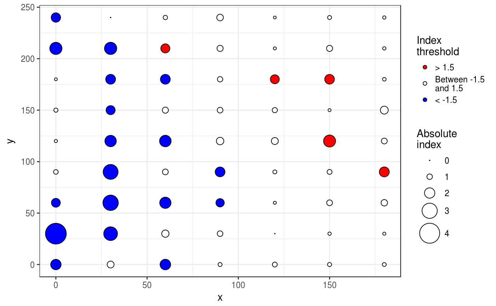
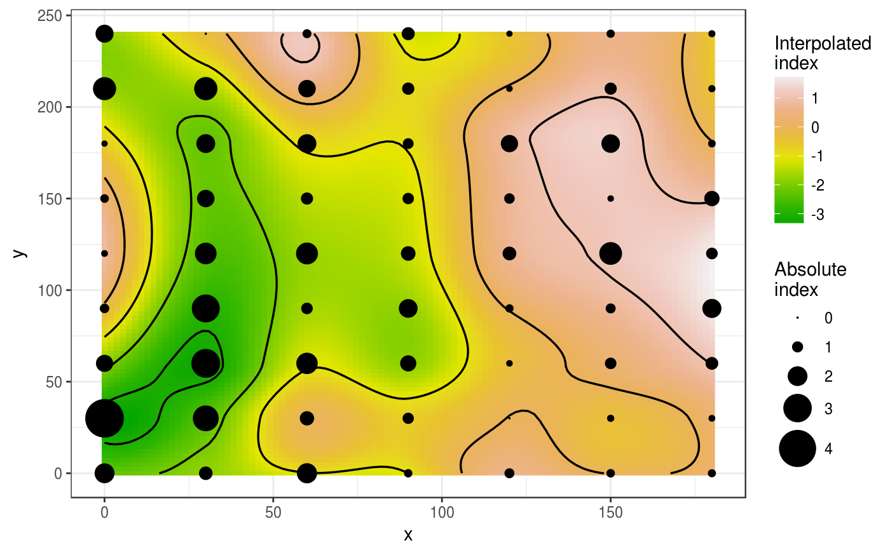
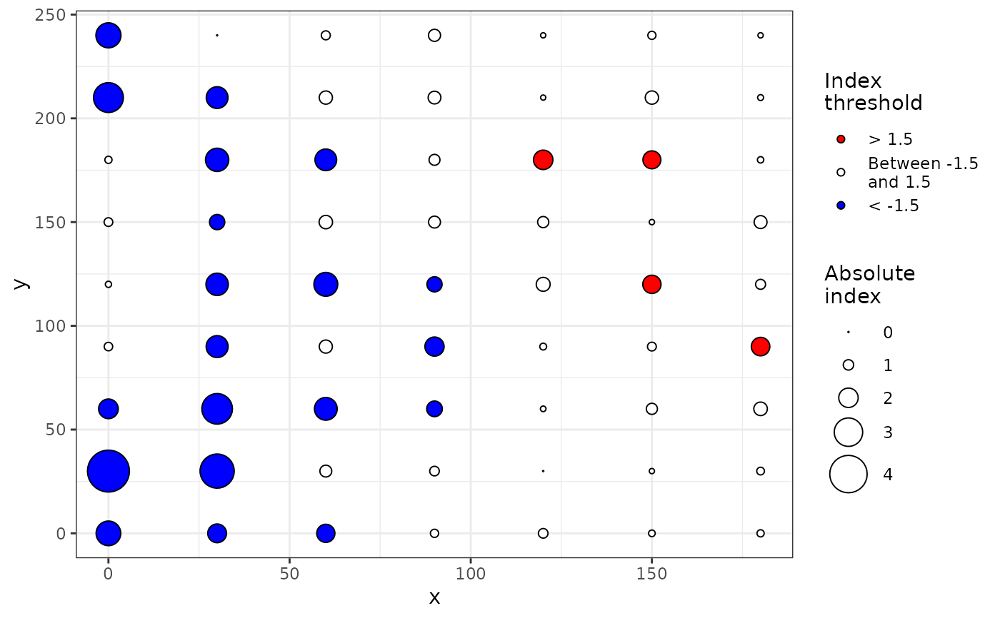
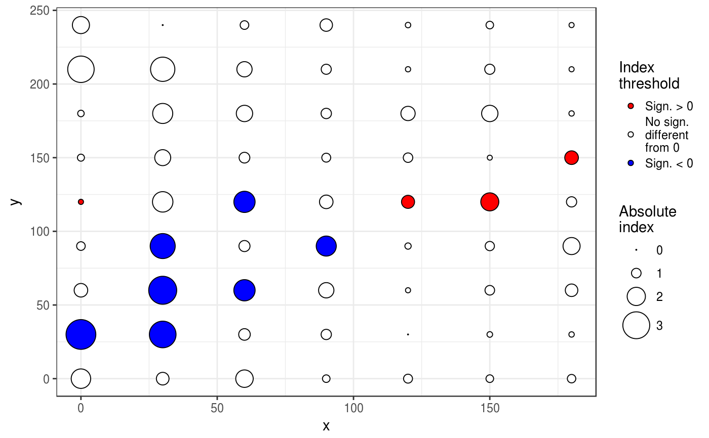

sadie performs the SADIE procedure. It computes different indices and
probabilities based on the distance to regularity for the observed spatial
pattern and a specified number of random permutations of this pattern. Both
kind of clustering indices described by Perry et al. (1999) and Li et al.
(2012) can be computed.
sadie(data, ...) # S3 method for data.frame sadie(data, index = c("Perry", "Li-Madden-Xu", "all"), nperm = 100, seed = NULL, threads = 1, ..., method = "shortsimplex", verbose = TRUE) # S3 method for matrix sadie(data, index = c("Perry", "Li-Madden-Xu", "all"), nperm = 100, seed = NULL, threads = 1, ..., method = "shortsimplex", verbose = TRUE) # S3 method for count sadie(data, index = c("Perry", "Li-Madden-Xu", "all"), nperm = 100, seed = NULL, threads = 1, ..., method = "shortsimplex", verbose = TRUE) # S3 method for incidence sadie(data, index = c("Perry", "Li-Madden-Xu", "all"), nperm = 100, seed = NULL, threads = 1, ..., method = "shortsimplex", verbose = TRUE)
| data | A data frame or a matrix with only three columns: the two first
ones must be the x and y coordinates of the sampling units, and the last
one, the corresponding disease intensity observations. It can also be a
|
|---|---|
| ... | Additional arguments to be passed to other methods. |
| index | The index to be calculated: "Perry", "Li-Madden-Xu" or "all". By default, only Perry's index is computed for each sampling unit. |
| nperm | Number of random permutations to assess probabilities. |
| seed | Fixed seed to be used for randomizations (only useful for checking purposes). Not fixed by default (= NULL). |
| threads | Number of threads to perform the computations. |
| method | Method for the transportation algorithm. |
| verbose | Explain what is being done (TRUE by default). |
By convention in the SADIE procedure, clustering indices for a donor unit (outflow) and a receiver unit (inflow) are positive and negative in sign, respectively.
Perry JN. 1995. Spatial analysis by distance indices. Journal of Animal Ecology 64, 303–314. doi:10.2307/5892
Perry JN, Winder L, Holland JM, Alston RD. 1999. Red–blue plots for detecting clusters in count data. Ecology Letters 2, 106–113. doi:10.1046/j.1461-0248.1999.22057.x
Li B, Madden LV, Xu X. 2012. Spatial analysis by distance indices: an alternative local clustering index for studying spatial patterns. Methods in Ecology and Evolution 3, 368–377. doi:10.1111/j.2041-210X.2011.00165.x
set.seed(123) # Create an intensity object: my_count <- count(aphids, mapping(x = xm, y = ym)) # Only compute Perry's indices: my_res <- sadie(my_count)#> Computation of Perry's indices: #> | | 0 % ~calculating |+ | 1 % ~19s |+ | 2 % ~10s |++ | 3 % ~07s |++ | 4 % ~05s |+++ | 5 % ~04s |+++ | 6 % ~04s |++++ | 7 % ~03s |++++ | 8 % ~03s |+++++ | 9 % ~03s |+++++ | 10% ~02s |++++++ | 11% ~02s |++++++ | 12% ~02s |+++++++ | 13% ~02s |+++++++ | 14% ~02s |++++++++ | 15% ~02s |++++++++ | 16% ~02s |+++++++++ | 17% ~02s |+++++++++ | 18% ~01s |++++++++++ | 19% ~01s |++++++++++ | 20% ~01s |+++++++++++ | 21% ~01s |+++++++++++ | 22% ~01s |++++++++++++ | 23% ~01s |++++++++++++ | 24% ~01s |+++++++++++++ | 25% ~01s |+++++++++++++ | 26% ~01s |++++++++++++++ | 27% ~01s |++++++++++++++ | 28% ~01s |+++++++++++++++ | 29% ~01s |+++++++++++++++ | 30% ~01s |++++++++++++++++ | 31% ~01s |++++++++++++++++ | 32% ~01s |+++++++++++++++++ | 33% ~01s |+++++++++++++++++ | 34% ~01s |++++++++++++++++++ | 35% ~01s |++++++++++++++++++ | 36% ~01s |+++++++++++++++++++ | 37% ~01s |+++++++++++++++++++ | 38% ~01s |++++++++++++++++++++ | 39% ~01s |++++++++++++++++++++ | 40% ~01s |+++++++++++++++++++++ | 41% ~01s |+++++++++++++++++++++ | 42% ~01s |++++++++++++++++++++++ | 43% ~01s |++++++++++++++++++++++ | 44% ~01s |+++++++++++++++++++++++ | 45% ~01s |+++++++++++++++++++++++ | 46% ~01s |++++++++++++++++++++++++ | 47% ~01s |++++++++++++++++++++++++ | 48% ~01s |+++++++++++++++++++++++++ | 49% ~01s |+++++++++++++++++++++++++ | 50% ~01s |++++++++++++++++++++++++++ | 51% ~00s |++++++++++++++++++++++++++ | 52% ~00s |+++++++++++++++++++++++++++ | 53% ~00s |+++++++++++++++++++++++++++ | 54% ~00s |++++++++++++++++++++++++++++ | 55% ~00s |++++++++++++++++++++++++++++ | 56% ~00s |+++++++++++++++++++++++++++++ | 57% ~00s |+++++++++++++++++++++++++++++ | 58% ~00s |++++++++++++++++++++++++++++++ | 59% ~00s |++++++++++++++++++++++++++++++ | 60% ~00s |+++++++++++++++++++++++++++++++ | 61% ~00s |+++++++++++++++++++++++++++++++ | 62% ~00s |++++++++++++++++++++++++++++++++ | 63% ~00s |++++++++++++++++++++++++++++++++ | 64% ~00s |+++++++++++++++++++++++++++++++++ | 65% ~00s |+++++++++++++++++++++++++++++++++ | 66% ~00s |++++++++++++++++++++++++++++++++++ | 67% ~00s |++++++++++++++++++++++++++++++++++ | 68% ~00s |+++++++++++++++++++++++++++++++++++ | 69% ~00s |+++++++++++++++++++++++++++++++++++ | 70% ~00s |++++++++++++++++++++++++++++++++++++ | 71% ~00s |++++++++++++++++++++++++++++++++++++ | 72% ~00s |+++++++++++++++++++++++++++++++++++++ | 73% ~00s |+++++++++++++++++++++++++++++++++++++ | 74% ~00s |++++++++++++++++++++++++++++++++++++++ | 75% ~00s |++++++++++++++++++++++++++++++++++++++ | 76% ~00s |+++++++++++++++++++++++++++++++++++++++ | 77% ~00s |+++++++++++++++++++++++++++++++++++++++ | 78% ~00s |++++++++++++++++++++++++++++++++++++++++ | 79% ~00s |++++++++++++++++++++++++++++++++++++++++ | 80% ~00s |+++++++++++++++++++++++++++++++++++++++++ | 81% ~00s |+++++++++++++++++++++++++++++++++++++++++ | 82% ~00s |++++++++++++++++++++++++++++++++++++++++++ | 83% ~00s |++++++++++++++++++++++++++++++++++++++++++ | 84% ~00s |+++++++++++++++++++++++++++++++++++++++++++ | 85% ~00s |+++++++++++++++++++++++++++++++++++++++++++ | 86% ~00s |++++++++++++++++++++++++++++++++++++++++++++ | 87% ~00s |++++++++++++++++++++++++++++++++++++++++++++ | 88% ~00s |+++++++++++++++++++++++++++++++++++++++++++++ | 89% ~00s |+++++++++++++++++++++++++++++++++++++++++++++ | 90% ~00s |++++++++++++++++++++++++++++++++++++++++++++++ | 91% ~00s |++++++++++++++++++++++++++++++++++++++++++++++ | 92% ~00s |+++++++++++++++++++++++++++++++++++++++++++++++ | 93% ~00s |+++++++++++++++++++++++++++++++++++++++++++++++ | 94% ~00s |++++++++++++++++++++++++++++++++++++++++++++++++ | 95% ~00s |++++++++++++++++++++++++++++++++++++++++++++++++ | 96% ~00s |+++++++++++++++++++++++++++++++++++++++++++++++++ | 97% ~00s |+++++++++++++++++++++++++++++++++++++++++++++++++ | 98% ~00s |++++++++++++++++++++++++++++++++++++++++++++++++++| 99% ~00s |++++++++++++++++++++++++++++++++++++++++++++++++++| 100% elapsed = 01smy_res#> Spatial Analysis by Distance IndicEs (sadie) #> #> Call: #> sadie.count(data = my_count) #> #> Ia: 1.3168 (Pa = 0.03) #>summary(my_res)#> #> Call: #> sadie.count(data = my_count) #> #> First 6 rows of clustering indices: #> x y i cost_flows idx_P idx_LMX prob #> 1 0 0 0 -148.09143 -2.0168809 NA NA #> 2 30 0 0 -91.27588 -1.2831301 NA NA #> 3 60 0 3 -108.16654 -2.0451766 NA NA #> 4 90 0 7 -40.99682 -0.6900056 NA NA #> 5 120 0 9 30.00000 0.8723695 NA NA #> 6 150 0 1 -42.31033 -0.7050747 NA NA #> #> Summary indices: #> overall inflow outflow #> Perry's index 1.321625 -1.396555 1.221604 #> Li-Madden-Xu's index NA NA NA #> #> Main outputs: #> Ia: 1.3168 (Pa = 0.03) #> #> 'Total cost': 1061.153 #> Number of permutations: 100 #>plot(my_res)plot(my_res, isoclines = TRUE)set.seed(123) # Compute both Perry's and Li-Madden-Xu's indices (using multithreading): my_res <- sadie(my_count, index = "all", threads = 2, nperm = 20)#> Computation of Perry's indices: #> | | 0 % ~calculating |+++++ | 10% ~00s |++++++++++ | 20% ~02s |+++++++++++++++ | 30% ~01s |++++++++++++++++++++ | 40% ~01s |+++++++++++++++++++++++++ | 50% ~01s |++++++++++++++++++++++++++++++ | 60% ~00s |+++++++++++++++++++++++++++++++++++ | 70% ~00s |++++++++++++++++++++++++++++++++++++++++ | 80% ~00s |+++++++++++++++++++++++++++++++++++++++++++++ | 90% ~00s |++++++++++++++++++++++++++++++++++++++++++++++++++| 100% elapsed = 01s #> Computation of Li-Madden-Xu's indices: #> | | 0 % ~calculating |+++++ | 10% ~02s |++++++++++ | 20% ~02s |+++++++++++++++ | 30% ~02s |++++++++++++++++++++ | 40% ~01s |+++++++++++++++++++++++++ | 50% ~01s |++++++++++++++++++++++++++++++ | 60% ~01s |+++++++++++++++++++++++++++++++++++ | 70% ~01s |++++++++++++++++++++++++++++++++++++++++ | 80% ~00s |+++++++++++++++++++++++++++++++++++++++++++++ | 90% ~00s |++++++++++++++++++++++++++++++++++++++++++++++++++| 100% elapsed = 02smy_res#> Spatial Analysis by Distance IndicEs (sadie) #> #> Call: #> sadie.count(data = my_count, index = "all", nperm = 20, threads = 2) #> #> Ia: 1.2717 (Pa = 0.1) #>summary(my_res)#> #> Call: #> sadie.count(data = my_count, index = "all", nperm = 20, threads = 2) #> #> First 6 rows of clustering indices: #> x y i cost_flows idx_P idx_LMX prob #> 1 0 0 0 -148.09143 -2.5098279 -1.8921519 0.0952381 #> 2 30 0 0 -91.27588 -1.3280067 -1.5218285 0.1904762 #> 3 60 0 3 -108.16654 -2.3049469 -2.1330817 0.0952381 #> 4 90 0 7 -40.99682 -0.8735051 -0.7627235 0.5714286 #> 5 120 0 9 30.00000 0.7524064 1.2478885 0.1904762 #> 6 150 0 1 -42.31033 -0.8010980 -0.6698738 0.7142857 #> #> Summary indices: #> overall inflow outflow #> Perry's index 1.361425 -1.486644 1.149688 #> Li-Madden-Xu's index 1.270823 -1.324220 1.216863 #> #> Main outputs: #> Ia: 1.2717 (Pa = 0.1) #> #> 'Total cost': 1061.153 #> Number of permutations: 20 #>plot(my_res) # Identical to: plot(my_res, index = "Perry")plot(my_res, index = "Li-Madden-Xu")set.seed(123) # Using usual data frames instead of intensity objects: my_df <- aphids[, c("xm", "ym", "i")] sadie(my_df)#> Computation of Perry's indices: #> | | 0 % ~calculating |+ | 1 % ~01s |+ | 2 % ~01s |++ | 3 % ~01s |++ | 4 % ~01s |+++ | 5 % ~01s |+++ | 6 % ~01s |++++ | 7 % ~05s |++++ | 8 % ~05s |+++++ | 9 % ~04s |+++++ | 10% ~04s |++++++ | 11% ~03s |++++++ | 12% ~03s |+++++++ | 13% ~03s |+++++++ | 14% ~03s |++++++++ | 15% ~03s |++++++++ | 16% ~02s |+++++++++ | 17% ~02s |+++++++++ | 18% ~02s |++++++++++ | 19% ~02s |++++++++++ | 20% ~02s |+++++++++++ | 21% ~02s |+++++++++++ | 22% ~02s |++++++++++++ | 23% ~02s |++++++++++++ | 24% ~02s |+++++++++++++ | 25% ~02s |+++++++++++++ | 26% ~01s |++++++++++++++ | 27% ~01s |++++++++++++++ | 28% ~01s |+++++++++++++++ | 29% ~01s |+++++++++++++++ | 30% ~01s |++++++++++++++++ | 31% ~01s |++++++++++++++++ | 32% ~01s |+++++++++++++++++ | 33% ~01s |+++++++++++++++++ | 34% ~01s |++++++++++++++++++ | 35% ~01s |++++++++++++++++++ | 36% ~01s |+++++++++++++++++++ | 37% ~01s |+++++++++++++++++++ | 38% ~01s |++++++++++++++++++++ | 39% ~01s |++++++++++++++++++++ | 40% ~01s |+++++++++++++++++++++ | 41% ~01s |+++++++++++++++++++++ | 42% ~01s |++++++++++++++++++++++ | 43% ~01s |++++++++++++++++++++++ | 44% ~01s |+++++++++++++++++++++++ | 45% ~01s |+++++++++++++++++++++++ | 46% ~01s |++++++++++++++++++++++++ | 47% ~01s |++++++++++++++++++++++++ | 48% ~01s |+++++++++++++++++++++++++ | 49% ~01s |+++++++++++++++++++++++++ | 50% ~01s |++++++++++++++++++++++++++ | 51% ~01s |++++++++++++++++++++++++++ | 52% ~01s |+++++++++++++++++++++++++++ | 53% ~01s |+++++++++++++++++++++++++++ | 54% ~01s |++++++++++++++++++++++++++++ | 55% ~01s |++++++++++++++++++++++++++++ | 56% ~01s |+++++++++++++++++++++++++++++ | 57% ~01s |+++++++++++++++++++++++++++++ | 58% ~01s |++++++++++++++++++++++++++++++ | 59% ~01s |++++++++++++++++++++++++++++++ | 60% ~00s |+++++++++++++++++++++++++++++++ | 61% ~00s |+++++++++++++++++++++++++++++++ | 62% ~00s |++++++++++++++++++++++++++++++++ | 63% ~00s |++++++++++++++++++++++++++++++++ | 64% ~00s |+++++++++++++++++++++++++++++++++ | 65% ~00s |+++++++++++++++++++++++++++++++++ | 66% ~00s |++++++++++++++++++++++++++++++++++ | 67% ~00s |++++++++++++++++++++++++++++++++++ | 68% ~00s |+++++++++++++++++++++++++++++++++++ | 69% ~00s |+++++++++++++++++++++++++++++++++++ | 70% ~00s |++++++++++++++++++++++++++++++++++++ | 71% ~00s |++++++++++++++++++++++++++++++++++++ | 72% ~00s |+++++++++++++++++++++++++++++++++++++ | 73% ~00s |+++++++++++++++++++++++++++++++++++++ | 74% ~00s |++++++++++++++++++++++++++++++++++++++ | 75% ~00s |++++++++++++++++++++++++++++++++++++++ | 76% ~00s |+++++++++++++++++++++++++++++++++++++++ | 77% ~00s |+++++++++++++++++++++++++++++++++++++++ | 78% ~00s |++++++++++++++++++++++++++++++++++++++++ | 79% ~00s |++++++++++++++++++++++++++++++++++++++++ | 80% ~00s |+++++++++++++++++++++++++++++++++++++++++ | 81% ~00s |+++++++++++++++++++++++++++++++++++++++++ | 82% ~00s |++++++++++++++++++++++++++++++++++++++++++ | 83% ~00s |++++++++++++++++++++++++++++++++++++++++++ | 84% ~00s |+++++++++++++++++++++++++++++++++++++++++++ | 85% ~00s |+++++++++++++++++++++++++++++++++++++++++++ | 86% ~00s |++++++++++++++++++++++++++++++++++++++++++++ | 87% ~00s |++++++++++++++++++++++++++++++++++++++++++++ | 88% ~00s |+++++++++++++++++++++++++++++++++++++++++++++ | 89% ~00s |+++++++++++++++++++++++++++++++++++++++++++++ | 90% ~00s |++++++++++++++++++++++++++++++++++++++++++++++ | 91% ~00s |++++++++++++++++++++++++++++++++++++++++++++++ | 92% ~00s |+++++++++++++++++++++++++++++++++++++++++++++++ | 93% ~00s |+++++++++++++++++++++++++++++++++++++++++++++++ | 94% ~00s |++++++++++++++++++++++++++++++++++++++++++++++++ | 95% ~00s |++++++++++++++++++++++++++++++++++++++++++++++++ | 96% ~00s |+++++++++++++++++++++++++++++++++++++++++++++++++ | 97% ~00s |+++++++++++++++++++++++++++++++++++++++++++++++++ | 98% ~00s |++++++++++++++++++++++++++++++++++++++++++++++++++| 99% ~00s |++++++++++++++++++++++++++++++++++++++++++++++++++| 100% elapsed = 01s#> Spatial Analysis by Distance IndicEs (sadie) #> #> Call: #> sadie.data.frame(data = my_df) #> #> Ia: 1.3168 (Pa = 0.03) #>